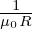
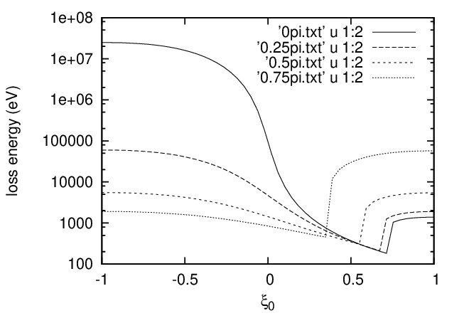

Deï¬ne (r,𝜃,ϕ) coordinates by
|
| (126) |
|
| (127) |
where (R,ϕ,Z) are the cylindrical coordinates and Raxis is a constant. The Jacobian 𝒥 of (r,𝜃,ϕ) coordinates can be calculated using the deï¬nition, yielding 𝒥 = −Rr (refer to my notes on equilibrium).
In (r,𝜃) coordinates, the toroidal elliptic operator Δ⋆Ψ is given by (refer to my notes on equilibrium):
 | (128) |
Assume that the toroidal current denstiy Jϕ is given and is uniform distributed, Jϕ = I∕S, where I is the total current within a boundary magnetic surface, S is the poloidal area enclosed by the boundary magnetic surface Since Jϕ is given, then the expression Jϕ = −Δ⋆Ψ can be used as a constraint for Ψ, i.e.,
 | (129) |
We consider the region 𜀠= r∕Raxis ≪ 1 (large aspect ratio regime), and further assume the following orderings
 | (130) |
and
|
| (131) |
Then the leading order of Eq. (129) is written as
 | (132) |
One solution to the above equation is
|
| (133) |
In the (r,𝜃,ϕ) corrdintates, the gradient of Ψ is written

 | (136) |
then in (r,𝜃,ϕ) coordinates, we obtain

 𜃠= cos𝜃eZ − sin𝜃eR(ϕ) is a unit vector. Then Eq. (135) is written as The toroidal component of the magnetic ï¬eld is written
𜃠= cos𝜃eZ − sin𝜃eR(ϕ) is a unit vector. Then Eq. (135) is written as The toroidal component of the magnetic ï¬eld is written
 | (139) |
Consider the case that g(Ψ) is a contant function, g(Ψ) = Bϕ0Raxis, then Eq. (139) is written
 | (140) |
I am curious about what the safety factor q looks like for the above flat current density proï¬le. Let us calculate q by using q = dΨt∕dΨp.
 | (141) |
 | (142) |
Then
|
| (143) |
Using maxima to perform the above integral, the above expression is written as
|
| (144) |
Â
Â

Â
Â
———————————
The minimum value of v0, denoted with v0 min, is reached when 𜃠= π or 𜃠= 0 depends on the ± in Eq. (??).
Â
Â
Â
Â
Â
Â
|
| (145) |
Â
 | (146) |
Â
Â
Â
Â
(in practice ψa is usually different from the actual poloidal flux Ψp and is related to Ψp by ψa = ±|Ψp|∕2π + C, where C is a constant)
Â
We consider the conï¬nement of the particles. The method is to determine whether the particles can reach a boundary flux surface by making use of the three constants of the motion. The boundary flux surface is labled by ψa, where ψa is the poloidal flux within that flux surface.
Â